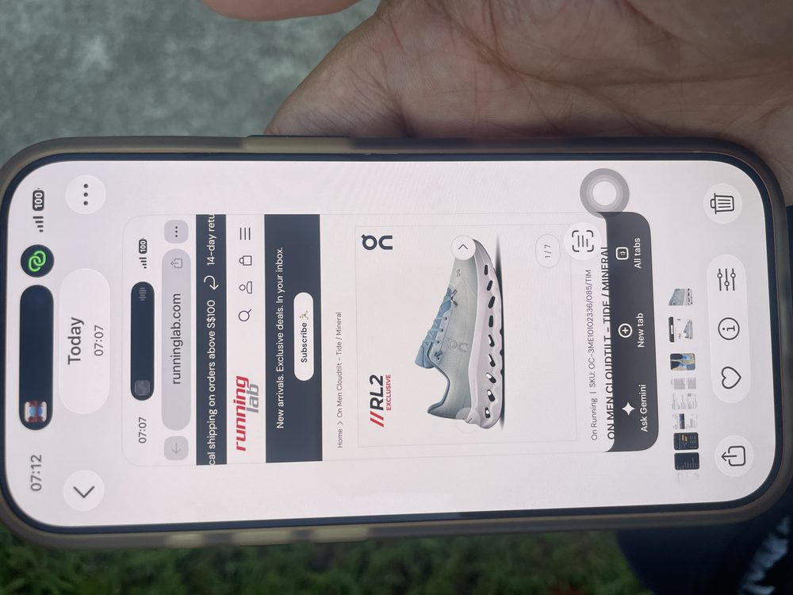

At 70, I notice things like this more than I used to — a new shoe, and suddenly walking feels different. So I looked into it properly: is a shoe like this actually lighter by the numbers, or is my brain playing a trick on me after years of heavier shoes? Turns out the honest answer is both.
70岁之后，我反而更容易留意这类小细节——换一双新鞋，走路的感觉就完全不一样了。所以我认真查了一下：这双鞋是不是真的在数字上更轻，还是我的大脑在多年穿惯了较重的鞋子后，产生了错觉？答案其实是——两者都有。
The Shoe I Bought我买的这双鞋

5 Aug 20262026年8月5日
RL2 Exclusive
On Cloudtilt — Tide / Mineral—潮汐蓝/矿石灰
Running Lab · On Running · SKU OC-3ME01023336/085/TIM
Bought from Running Lab. It's On's low-profile lifestyle/walking shoe — built off the same CloudTec cushioning as their running shoes, but pared down for everyday wear.
在Running Lab购入的。这是On品牌旗下走路/日常穿着款，采用与他们跑鞋相同的CloudTec缓震科技，但整体结构做了简化，更适合日常穿着。
- Men's weight: ~10.7 oz / ~303 g per shoe (size-dependent)男款重量：约10.7盎司/约303克（因尺码而异）
- Women's weight: ~8.1 oz / ~229 g per shoe女款重量：约8.1盎司/约229克
- A typical everyday sneaker runs ~280–350 g per shoe一般日常运动鞋每只重约280–350克
Reason 1: It's Genuinely a Light Shoe (Physical)原因一：这双鞋本身真的比较轻（物理层面）
Part of the answer is simple physics — On built this shoe to weigh less than an average sneaker, mainly through three design choices:
答案的一部分很简单，就是物理事实——On在设计这双鞋时，主要通过三个方式让它比一般运动鞋更轻：
Engineered Mesh Upper工程网面鞋面
The upper is a thin, perforated mesh instead of layers of leather or foam overlays — less material means less weight, right where it matters most (weight up on the foot is felt more than weight under it).
鞋面采用薄而带孔的网布材质，而不是多层皮革或泡棉叠加——材料越少，重量自然越轻，而且这正是脚感最敏感的位置（脚背上的重量比脚底下的重量更容易被察觉）。
Low-Profile CloudTec Pods低轮廓CloudTec气垫
Instead of one solid block of foam, the sole is made of individual hollow "cloud" pods. Hollow shapes cushion just as well while using noticeably less foam mass than a solid midsole.
鞋底不是一整块实心泡棉，而是由一颗颗中空的"云朵"气垫组成。中空结构的缓震效果不打折扣，但所用的泡棉重量明显比实心中底要少。
Minimal Outsole Rubber极简的鞋底橡胶
Walking shoes like this skip the thick rubber overlays a trail or heavy-duty shoe needs, since they're not built for rough terrain.
这类走路鞋不像越野鞋或重型鞋那样需要厚重的橡胶外底，因为它本来就不是为崎岖地形设计的。
Reason 2: Why It Feels Even Lighter Than the Number (Perception)原因二：为什么感觉比实际数字还要轻（心理/感知层面）
~300 g doesn't sound dramatic on its own — many shoes I already own are close to that. So why did this one feel so noticeably lighter the first time I walked in it? A few things are working together:
单看约300克这个数字，其实并不算特别惊人——我原本的一些鞋子重量也差不多。那为什么第一次穿上走路时，还是明显感觉轻了很多？这背后其实有几个因素同时在起作用：
Swing Weight, Not Just Total Weight"摆动重量"，而不只是总重量
Every step, the foot swings forward like a pendulum. Weight concentrated low and close to the foot (thin sole, light upper) takes less muscular effort to swing than the same total weight spread into a thick, heavy sole — so it feels lighter than the scale says.每走一步，脚都像钟摆一样向前摆动。如果重量集中在低处、靠近脚部（薄鞋底、轻鞋面），摆动起来所需的肌肉力气，会比同样总重量但分布在厚重鞋底上的鞋子要小——所以感觉会比秤上的数字更轻。
The Contrast Effect对比效应
The brain judges "light" and "heavy" relative to what it's used to. After years in heavier shoes, the first few steps in something lighter get exaggerated by contrast — the same shoe would feel ordinary to someone who's worn ultralight shoes for years.大脑判断"轻"或"重"，其实是跟习惯的重量做比较。穿惯了较重的鞋子后，第一次穿上更轻的鞋子，那种"轻"的感觉会被对比放大——如果换成一个一直穿超轻鞋的人来穿，可能只会觉得很普通。
Less Impact Feedback更少的冲击回馈
Responsive CloudTec cushioning absorbs and returns energy on each step, so the foot doesn't feel the same "thud" of effort a firmer, heavier sole gives. Less felt effort per step reads to the brain as "lighter," even though cushioning and weight are two different things.富有弹性的CloudTec缓震在每一步都能吸收并回弹能量，脚底不会有较硬较重鞋底那种"沉闷"的踩踏感。每一步感受到的费力程度越少，大脑就越容易把它理解成"更轻"，尽管缓震和重量本来是两回事。
Fast Proprioceptive Recalibration身体感知的快速重新校准
The body's sense of where the foot is and how hard it's working (proprioception) recalibrates within the first few steps of a new shoe — which is exactly when the "wow, this is light" feeling is strongest, before it becomes the new normal.身体对脚的位置和用力程度的感知（本体感觉），会在穿上新鞋的头几步内迅速重新校准——而"哇，好轻"的感觉往往正是在这最初几步最强烈，之后就会慢慢变成"新的日常"。
So Which Is It — Physical or Perception?所以到底是物理原因，还是心理感觉？
Both, honestly老实说，两者都是
The Cloudtilt really is lighter in construction than a typical everyday shoe — that part is real, measurable, and by design. But the "wow, it's SO light" feeling on that first walk is bigger than the gram difference alone explains — that part is my brain reacting to less swing weight, less impact feedback, and the contrast against years of heavier shoes. Give it a week and the same shoe will start to feel normal, even though nothing about it changed.
Cloudtilt在结构上确实比一般日常鞋子更轻——这部分是真实、可测量、并且是设计出来的效果。但第一次走路时那种"哇，也太轻了吧"的感觉，其实比单纯的克数差异要强烈得多——那部分是我的大脑在对更小的摆动重量、更少的冲击回馈、以及多年穿惯重鞋后的对比效应做出的反应。穿上一周之后，同一双鞋就会开始变得"正常"，尽管鞋子本身什么都没变。
Not a Sponsored Review非赞助测评
Just personal notes on a shoe I bought with my own money, plus what I learned looking into why it feels the way it does. If you're comparing shoes yourself, weight is only one factor — fit, cushioning, and how your own feet respond matter just as much.
这只是我自费购买后的个人使用心得，加上我为了搞懂"为什么感觉这么轻"而查到的一些知识。如果你也在比较鞋子，重量只是其中一个因素——合脚程度、缓震效果，以及自己双脚的实际反应，同样重要。